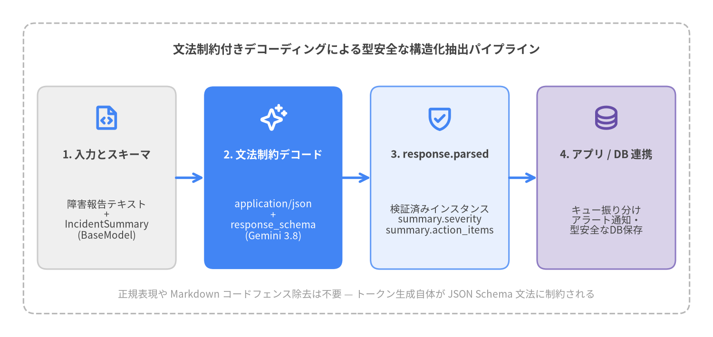
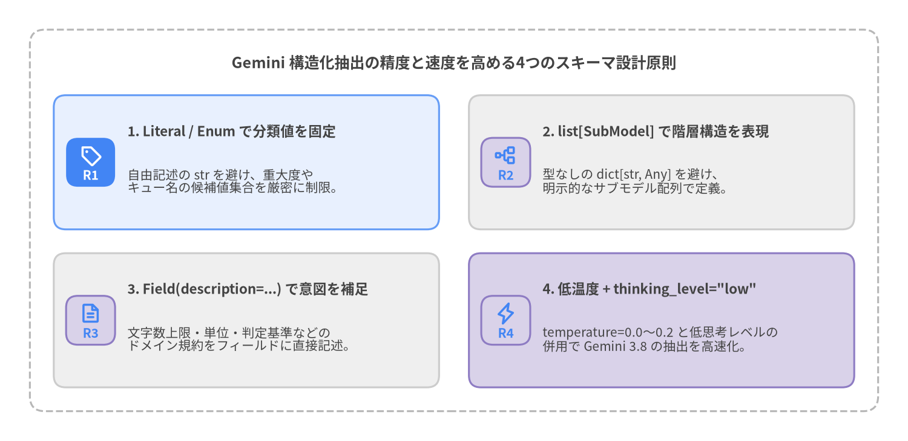

04. Pydantic による型安全な構造化出力（response_schema）
プロンプトだけで「JSON 形式のみで回答してください」と指示する手法は、前置き文の混入や ```json コードフェンスの付与によって本番環境で頻繁にパースエラーを引き起こします。response_mime_type="application/json" と response_schema=<Pydantic BaseModel> を併用すると 文法制約付きデコーディング（Grammar-Constrained Decoding） が有効化され、Gemini のトークン生成自体がスキーマ文法に厳密に制約されるため、正規表現や文字列整形を一切使わずに response.parsed から検証済みの Pydantic インスタンスを直接取得できます。

View Drawlib Python Code
from drawlib.canvas import save, setup
from drawlib.icons import phosphor
from drawlib.lines import line
from drawlib.shapes import rectangle
from drawlib.styles import Styles
from drawlib.text import text
setup(width=152, height=72, dpi=150)
# Outer pipeline boundary (Z-Layer 1)
rectangle((76, 36), width=142, height=62, style=Styles.MutedDashed.patch(shape_r=2.5))
text(
(76, 61.5),
"文法制約付きデコーディングによる型安全な構造化抽出パイプライン",
style=Styles.DarkBold.patch(text_size=12.0),
)
# 4-stage horizontal coordinates: 4 cards of width=29.5 with 6.0-unit arrow gaps
card_w = 29.5
card_h = 39.0
card_cy = 34.0
stage_xs = [22.75, 58.25, 93.75, 129.25]
# Stage 1: Unstructured Input + Pydantic Schema (Neutral)
rectangle((stage_xs[0], card_cy), width=card_w, height=card_h, style=Styles.Neutral.patch(shape_r=2.0))
phosphor.file_code((stage_xs[0], 46.8), width=6.0, style=Styles.PrimaryBold)
text((stage_xs[0], 39.0), "1. 入力とスキーマ", style=Styles.DarkBold.patch(text_size=10.8))
text(
(stage_xs[0], 25.0),
"障害報告テキスト\n+\nIncidentSummary\n(BaseModel)",
style=Styles.Dark.patch(text_size=10.0),
)
# Stage 2: Grammar-Constrained Decoding (Focal Hero: PrimaryFlat)
rectangle((stage_xs[1], card_cy), width=card_w, height=card_h, style=Styles.PrimaryFlat.patch(shape_r=2.0))
phosphor.sparkle((stage_xs[1], 46.8), width=6.0, style=Styles.WhiteBold)
text((stage_xs[1], 39.0), "2. 文法制約デコード", style=Styles.WhiteBold.patch(text_size=10.8))
text(
(stage_xs[1], 25.0),
"application/json\n+\nresponse_schema\n(Gemini 3.8)",
style=Styles.White.patch(text_size=10.0),
)
# Stage 3: Validated Python Object (PrimaryNeutral)
rectangle((stage_xs[2], card_cy), width=card_w, height=card_h, style=Styles.PrimaryNeutral.patch(shape_r=2.0))
phosphor.shield_check((stage_xs[2], 46.8), width=6.0, style=Styles.PrimaryBold)
text((stage_xs[2], 39.0), "3. response.parsed", style=Styles.DarkBold.patch(text_size=10.8))
text(
(stage_xs[2], 25.0),
"検証済みインスタンス\nsummary.severity\nsummary.action_items",
style=Styles.Dark.patch(text_size=10.0),
)
# Stage 4: Downstream Typed Application & DB (SecondaryNeutral)
rectangle((stage_xs[3], card_cy), width=card_w, height=card_h, style=Styles.SecondaryNeutral.patch(shape_r=2.0))
phosphor.database((stage_xs[3], 46.8), width=6.0, style=Styles.SecondaryBold)
text((stage_xs[3], 39.0), "4. アプリ / DB 連携", style=Styles.DarkBold.patch(text_size=10.8))
text(
(stage_xs[3], 25.0),
"キュー振り分け\nアラート通知・\n型安全なDB保存",
style=Styles.Dark.patch(text_size=10.0),
)
# Connectors across 6.0-unit gaps (Z-Layer 3)
for idx in range(3):
x_start = stage_xs[idx] + card_w / 2.0
x_end = stage_xs[idx + 1] - card_w / 2.0
line((x_start, card_cy), (x_end, card_cy), arrow_head="->", style=Styles.PrimaryBold)
text(
(76, 9.2),
"正規表現や Markdown コードフェンス除去は不要 — トークン生成自体が JSON Schema 文法に制約される",
style=Styles.Muted.patch(text_size=10.0),
)
save()
1. クライアント初期化とネストされた Pydantic スキーマ定義
まず、セルの先頭で MODEL = "gemini-3.8-flash" を定数として定義し（モデルの切り替えを1箇所で管理できるようにします）、Google Colab のシークレット（左サイドバーの 🔑 アイコン）に保存した GEMINI_API_KEY を読み込んで google-genai クライアントを初期化します。
!pip install -q google-genai
MODEL = "gemini-3.8-flash"
from google.colab import userdata
from google import genai
client = genai.Client(api_key=userdata.get("GEMINI_API_KEY"))
次に、簡潔な障害報告文からポストモーテム情報を構造化抽出するため、ネストされた Pydantic スキーマ（IncidentSummary 内の list[ActionItem]）を定義します。response_schema に IncidentSummary クラスを渡すだけで、SDK が JSON Schema への変換と response.parsed へのデシリアライズを自動実行します（pydantic は Google Colab に標準搭載されており、google-genai の依存関係としても同梱されています）。
from typing import Literal
from google.genai import types
from pydantic import BaseModel, Field
class ActionItem(BaseModel):
owner: str = Field(description="対応タスクを担当するチーム名。")
task: str = Field(description="具体的な再発防止施策。")
priority: Literal["P0", "P1", "P2"] = Field(description="優先度（P0が最優先）。")
class IncidentSummary(BaseModel):
title: str = Field(description="40文字以内の簡潔なインシデント件名。")
severity: Literal["LOW", "MEDIUM", "HIGH", "CRITICAL"] = Field(
description="顧客影響度に基づく重大度レベル。"
)
root_cause: str = Field(description="技術的な根本原因の1文要約。")
affected_services: list[str] = Field(description="影響を受けたサービス名一覧。")
action_items: list[ActionItem] = Field(description="優先度付きの再発防止タスク一覧。")
response = client.models.generate_content(
model=MODEL,
contents="Redisのタイムアウトにより、決済APIで12分間にわたり502エラーが発生しました。",
config=types.GenerateContentConfig(
response_mime_type="application/json",
response_schema=IncidentSummary,
temperature=0.1,
),
)
# response.parsed は IDE の型補完が効く検証済み IncidentSummary インスタンスを返す
summary: IncidentSummary = response.parsed
print(f"[{summary.severity}] {summary.title} (対策タスク: {len(summary.action_items)}件)")
print(summary.model_dump_json(indent=2))
2. スキーマ設計のベストプラクティスと高速・決定論的な構造化抽出
文法制約付きデコーディングは JSON の構文破損を100%防ぎますが、実務での 抽出精度 と 応答速度 をさらに高めるには、以下の4つの Pydantic スキーマ設計原則が有効です。

View Drawlib Python Code
from drawlib.canvas import save, setup
from drawlib.icons import phosphor
from drawlib.shapes import rectangle
from drawlib.smartarts import CardList
from drawlib.styles import Styles
from drawlib.text import text
setup(width=152, height=74, dpi=150)
rectangle((76, 37), width=142, height=64, style=Styles.MutedDashed.patch(shape_r=2.5))
text(
(76, 63.5),
"Gemini 構造化抽出の精度と速度を高める4つのスキーマ設計原則",
style=Styles.DarkBold.patch(text_size=12.0),
)
# Left Column: Top-Left (R1) & Bottom-Left (R3)
left_cards = CardList(
style=Styles.Neutral.patch(shape_r=2.0),
text_style=Styles.DarkBold.patch(text_size=10.8),
description_style=Styles.Dark.patch(text_size=10.0),
badge_shape="rounded_rect",
badge_style=Styles.SecondaryNeutral,
badge_text_style=Styles.PrimaryBold.patch(text_size=10.0),
icon_style=Styles.PrimaryBold,
direction="vertical",
spacing=4.0,
)
left_cards.add(
"1. Literal / Enum で分類値を固定",
"自由記述の str を避け、重大度や\nキュー名の候補値集合を厳密に制限。",
badge_text="R1",
icon=phosphor.tag,
style=Styles.PrimaryNeutral.patch(shape_r=2.0),
badge_style=Styles.PrimaryFlat,
badge_text_style=Styles.WhiteBold.patch(text_size=10.0),
icon_style=Styles.WhiteBold,
)
left_cards.add(
"3. Field(description=...) で意図を補足",
"文字数上限・単位・判定基準などの\nドメイン規約をフィールドに直接記述。",
badge_text="R3",
icon=phosphor.file_text,
)
left_cards.draw(xy=(9.0, 9.0), width=64.5, height=49.0, align="bottom_left")
# Right Column: Top-Right (R2) & Bottom-Right (R4)
right_cards = CardList(
style=Styles.Neutral.patch(shape_r=2.0),
text_style=Styles.DarkBold.patch(text_size=10.8),
description_style=Styles.Dark.patch(text_size=10.0),
badge_shape="rounded_rect",
badge_style=Styles.SecondaryNeutral,
badge_text_style=Styles.PrimaryBold.patch(text_size=10.0),
icon_style=Styles.PrimaryBold,
direction="vertical",
spacing=4.0,
)
right_cards.add(
"2. list[SubModel] で階層構造を表現",
"型なしの dict[str, Any] を避け、\n明示的なサブモデル配列で定義。",
badge_text="R2",
icon=phosphor.tree_structure,
)
right_cards.add(
'4. 低温度 + thinking_level="low"',
"temperature=0.0〜0.2 と低思考レベルの\n併用で Gemini 3.8 の抽出を高速化。",
badge_text="R4",
icon=phosphor.lightning,
style=Styles.SecondaryNeutral.patch(shape_r=2.0),
)
right_cards.draw(xy=(78.5, 9.0), width=64.5, height=49.0, align="bottom_left")
save()
response_schema 用のモデルを設計する際は、次の4点を意識してください。
- 閉じたカテゴリには
LiteralまたはEnumを使う:Literal["P0", "P1", "P2"]やstr, Enumで選択肢を列挙することで、表記揺れや想定外ラベルによる後続処理の分岐ミスを防止できます。 - 任意の
dict[str, Any]ではなくlist[SubModel]を合成する: キー名が不定の辞書型は文法制約を効かせにくいため、明示的な属性を持つサブモデルの配列としてモデリングします。 - 曖昧な指標には簡潔な
Field(description=...)を添える:descriptionは JSON Schema にそのまま埋め込まれるため、プロンプト本文を肥大化させずに文字数制限や緊急度の判定基準をモデルへ伝達できます。 - 高速・決定論的な抽出では
temperature=0.0〜0.2とthinking_level="low"を組み合わせる:gemini-3.8-flashで定型データ抽出や分類を行う場合、thinking_config=types.ThinkingConfig(thinking_level="low")を併用するとレイテンシと出力のばらつきを最小化できます。
これら4つの原則を組み合わせ、Enum と list[RoutedIssue] および thinking_level="low" を用いて、複数の課題を含む問い合わせ文を型安全な振り分けレコードへ分割し、response.parsed の各要素を直接ループ処理してみましょう。
from enum import Enum
class TicketQueue(str, Enum):
BILLING = "billing"
AUTH = "auth"
ANALYTICS = "analytics"
class RoutedIssue(BaseModel):
queue: TicketQueue = Field(description="振り分け先のサポートキュー。")
urgent: bool = Field(description="決済またはログイン不能な場合はTrue。")
summary: str = Field(description="30文字以内の簡潔な課題要約。")
class TriageBatch(BaseModel):
issues: list[RoutedIssue] = Field(description="メッセージから抽出された個別課題の一覧。")
triage_response = client.models.generate_content(
model=MODEL,
contents="請求書#8821で二重決済が発生しており、CSVレポートのエクスポートも失敗します。",
config=types.GenerateContentConfig(
response_mime_type="application/json",
response_schema=TriageBatch,
temperature=0.1,
thinking_config=types.ThinkingConfig(thinking_level="low"),
),
)
batch: TriageBatch = triage_response.parsed
for item in batch.issues:
flag = "URGENT" if item.urgent else "NORMAL"
print(f"[{flag}] -> {item.queue.value}: {item.summary}")